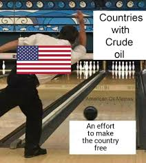

American Oil: Estados Unidos ya ha ganado fama respecto al afan de su elite anglo-americana, un reducido grupo de las familias de la industria petrolera, de conseguir el cada vez mas escaso petroleo en los países del medio oriente con crudo para si venta y explotación. Este afan se ha efectuado sobre todo con la ley de invasion preventiva contra los países arabes. Con la constante intervension de los ejercitos americanos, se han ganado fama de invadir donde se puede encontrar petroleo, de ahi surgen los memes de la invasion de Estados Unidos en cualquier cosa que tenga aceite